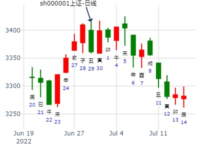

主帖标题: 今日午日，清2/3仓出局。
占事：中海集运[601866]，今日何时买入明日何时卖出得财？
公历起卦时间：2008年1月9日5时40分 (手工指定)
干支：丁亥年 癸丑月 戊申日 乙卯时 （日空：寅卯）
时间: 2008-01-09
干支: 丁亥年癸丑月戊申日 (旬空: 寅卯 )
复静卦
朱雀 ▅▅ ▅▅ 子孙酉金
青龙 ▅▅ ▅▅ 妻财亥水
玄武 ▅▅ ▅▅ 兄弟丑土 应
白虎 ▅▅ ▅▅ 兄弟辰土
腾蛇 ▅▅ ▅▅ 官鬼寅木
勾陈 ▅▅▅▅▅ 妻财子水 世
这个卦是雷地复。又是合卦。看来跌势不足，涨势有余。但力度不大。今日，申日下午涨势应很好。
主帖标题: 2012年.年线有望收阳线了
2012壬辰年流年综合预测--老陈测股
公历起卦时间：2012年2月4日19时30分 (手工指定)
干支：壬辰年 壬寅月 乙未日 丙戌时 （日空：辰巳）
神煞：驿马－巳 桃花－子 日禄－卯 贵人－子，申
坤宫：地雷复 (六合) 坤宫：地雷复 (六合)
六神 伏神 本 卦 变 卦
玄武 子孙癸酉金 ▅▅ ▅▅ 子孙癸酉金 ▅▅ ▅▅
白虎 妻财癸亥水 ▅▅ ▅▅ 妻财癸亥水 ▅▅ ▅▅
腾蛇 兄弟癸丑土 ▅▅ ▅▅ 应 兄弟癸丑土 ▅▅ ▅▅ 应
勾陈 兄弟庚辰土 ▅▅ ▅▅ 兄弟庚辰土 ▅▅ ▅▅
朱雀 父母乙巳火 官鬼庚寅木 ▅▅ ▅▅ 官鬼庚寅木 ▅▅ ▅▅
青龙 妻财庚子水 ▅▅▅▅▅ 世 妻财庚子水 ▅▅▅▅▅ 世
2012年流年综合预测：
复. 有复兴之意. 年线为阳线.可关注金水方面的股票
卯月子孙月破，大跌，辰月本该大跌，跟辰巳空，是否有关？
一路跌，到子月妻财持世才大涨。连五爻亥月都起不来。世爻妻财才是正宗。
主帖标题: 002289雨顺电子今天跟明天涨跌
占事：002289宇顺电子今天跟明天涨跌
公历起卦时间：2016年2月18日10时39分 (电脑自动)
干支：丙申年 庚寅月 庚午日 辛巳时 （日空：戌亥）
坤宫：地雷复 (六合) 坤宫：地雷复 (六合)
六神 伏神 本 卦 变 卦
腾蛇 子孙癸酉金 ▅▅ ▅▅ 子孙癸酉金 ▅▅ ▅▅
勾陈 妻财癸亥水 ▅▅ ▅▅ 妻财癸亥水 ▅▅ ▅▅
朱雀 兄弟癸丑土 ▅▅ ▅▅ 应 兄弟癸丑土 ▅▅ ▅▅ 应
青龙 兄弟庚辰土 ▅▅ ▅▅ 兄弟庚辰土 ▅▅ ▅▅
玄武 父母乙巳火 官鬼庚寅木 ▅▅ ▅▅ 官鬼庚寅木 ▅▅ ▅▅
白虎 妻财庚子水 ▅▅▅▅▅ 世 妻财庚子水 ▅▅▅▅▅ 世
主帖标题: 发现一只准黑马 诸位测测
既然是黑马就意味着它要大幅上涨，价格不翻番都对不起黑马的称号。现在价格是9块钱，翻一番就是18块。是不是黑马就测一下它能不能干到18块以上就行了。
占问事宜：603326今年有没有站上18元的机会
起卦公历：2023年2月3日13时19分(北京时间)
起卦干支： 壬寅年 癸丑月 壬辰日 丁未时 [空亡:午、未] (卦身：子)
主变卦 地雷复(坤宫)
白虎 ▅▅ ▅▅ 子孙酉金
腾蛇 ▅▅ ▅▅ 妻财亥水
勾陈 ▅▅ ▅▅ 兄弟丑土 应
朱雀 ▅▅ ▅▅ 兄弟辰土
青龙 父母巳火▅▅ ▅▅ 官鬼寅木
玄武 ▅▅▅▅▅ 妻财子水 世
午月破打出低点。
五爻的财就是那18块的价格，可惜今年是官鬼值年，耗泄财爻。月日又把财爻置于死地，根本就没啥希望。
王注：午未空，则子丑月反而跌。旬空被冲实。
申月青龙值长生，酉月白虎子孙更猛。
时间: 2015-03-16 17：05
干支: 乙未年己卯月辛卯日 (旬空: 午未 )
复静卦
腾蛇 ▅▅ ▅▅ 子孙酉金
勾陈 ▅▅ ▅▅ 妻财亥水
朱雀 ▅▅ ▅▅ 兄弟丑土 应
青龙 ▅▅ ▅▅ 兄弟辰土
玄武 ▅▅ ▅▅ 官鬼寅木
白虎 ▅▅▅▅▅ 妻财子水 世
以此卦断：
巳月午月财爻月破，惨啊。
未月兄弟应爻月破，但是助三爻兄弟。涨不起来。
申月冲官露父，也涨不动。
酉月有涨。戌月不详。亥子月看涨。
须参考：603326今年有没有站上18元的机会--贴。也是复年卦
占事：道恩股份(002838) 近期走势
地雷复静卦。
公历起卦时间：2017年3月21日13时48分 (在线摇卦)
干支：丁酉年 癸卯月 丁未日 丁未时 （日空：寅卯）
坤宫：地雷复 (六合) 坤宫：地雷复 (六合)
六神 伏神 本 卦 变 卦
青龙 子孙癸酉金 ▅▅ ▅▅ 子孙癸酉金 ▅▅ ▅▅
玄武 妻财癸亥水 ▅▅ ▅▅ 妻财癸亥水 ▅▅ ▅▅
白虎 兄弟癸丑土 ▅▅ ▅▅ 应 兄弟癸丑土 ▅▅ ▅▅ 应
腾蛇 兄弟庚辰土 ▅▅ ▅▅ 兄弟庚辰土 ▅▅ ▅▅
勾陈 父母乙巳火 官鬼庚寅木 ▅▅ ▅▅ 官鬼庚寅木 ▅▅ ▅▅
朱雀 妻财庚子水 ▅▅▅▅▅ 世 妻财庚子水 ▅▅▅▅▅ 世
子孙月破日生，财爻日月不得助。
占事：TCL集团下周涨跌？
时间: 2019-03-23 16时42分
干支: 己亥年丁卯月己未日 (旬空: 子丑 )
复静卦
勾陈 ▅▅ ▅▅ 子孙酉金
朱雀 ▅▅ ▅▅ 妻财亥水
青龙 ▅▅ ▅▅ 兄弟丑土 应
玄武 ▅▅ ▅▅ 兄弟辰土
白虎 ▅▅ ▅▅ 官鬼寅木
腾蛇 ▅▅▅▅▅ 妻财子水 世
世爻旬空，见顶卦。
卯月子孙破，未日世爻日克无力。真空。
但是值日酉这天是有力，可以涨停。然后就完蛋了。
主帖标题: 请易经高手解4月18日大盘涨跌卦!
以下是引用金眼牛在2007-4-17 15:17:00的发言：
占事：4月18日大盘涨跌?起卦方式： 时间起卦
公历时间：2007年4月17日15时4分42秒
干支：丁亥年 甲辰月 辛巳日 丙申时 (旬空：申酉)
坤宫：地雷复（六合）六神 伏 神 【本 卦】
螣蛇 ▅▅ ▅▅ 子孙酉金、、
勾陈 ▅▅ ▅▅ 官鬼亥水、、
朱雀 ▅▅ ▅▅ 兄弟丑土、、应
青龙 伏父母巳火 ▅▅ ▅▅ 兄弟辰土、、
玄武 ▅▅ ▅▅ 官鬼寅木、、
白虎 ▅▅▅▅▅ 妻财子水、世
这卦是跌像！不过以时间起卦精确度不行！

主帖标题: 600399抚顺特钢下午跟明天涨跌
出生：没填 年 性别：男 占事：600399抚顺特钢明天涨跌
排卦：元亨利贞网六爻在线排盘系统 http://www.china95.net
公历起卦时间：2014年4月2日15时18分 (电脑自动)
干支：甲午年 丁卯月 癸卯日 庚申时 （日空：辰巳）
神煞：驿马－巳 桃花－子 日禄－子 贵人－卯，巳
坤宫：地雷复 (六合)
六神 伏神 本 卦
白虎 子孙癸酉金 ▅▅ ▅▅
腾蛇 妻财癸亥水 ▅▅ ▅▅
勾陈 兄弟癸丑土 ▅▅ ▅▅ 应
朱雀 兄弟庚辰土 ▅▅ ▅▅
青龙 父母乙巳火 官鬼庚寅木 ▅▅ ▅▅
玄武 妻财庚子水 ▅▅▅▅▅ 世

占事：七匹狼最近一个月会涨不？
排卦：元亨利贞网六爻在线排盘系统 http://www.china95.net
公历起卦时间：2014年5月4日21时35分 (在线摇卦)
干支：甲午年 戊辰月 乙亥日 丁亥时 （日空：申酉）
坤宫：地雷复 (六合)
六神 伏神 本 卦
玄武 子孙癸酉金 ▅▅ ▅▅
白虎 妻财癸亥水 ▅▅ ▅▅
腾蛇 兄弟癸丑土 ▅▅ ▅▅ 应
勾陈 兄弟庚辰土 ▅▅ ▅▅
朱雀 父母乙巳火 官鬼庚寅木 ▅▅ ▅▅
青龙 妻财庚子水 ▅▅▅▅▅ 世
---小梅床上起的卦，不一定准。供参考。
性别：女 占事：小梅测七匹狼最近一个月走势？
排卦：元亨利贞网六爻在线排盘系统 http://www.china95.net
公历起卦时间：2014年5月4日21时25分 (在线摇卦)
干支：甲午年 戊辰月 乙亥日 丁亥时 （日空：申酉）
巽宫：风火家人 巽宫：巽为风 (六冲)
六神 伏神 本 卦 变 卦
玄武 兄弟辛卯木 ▅▅▅▅▅ 兄弟辛卯木 ▅▅▅▅▅ 世
白虎 子孙辛巳火 ▅▅▅▅▅ 应 子孙辛巳火 ▅▅▅▅▅
腾蛇 妻财辛未土 ▅▅ ▅▅ 妻财辛未土 ▅▅ ▅▅
勾陈 官鬼辛酉金 父母己亥水 ▅▅▅▅▅ 官鬼辛酉金 ▅▅▅▅▅ 应
朱雀 妻财己丑土 ▅▅ ▅▅ 世 ╳→ 父母辛亥水 ▅▅▅▅▅
青龙 兄弟己卯木 ▅▅▅▅▅ ○→ 妻财辛丑土 ▅▅ ▅▅
二个未日均大涨。冲丑土？
二个戌日均跌，莫非兄弟卯木动而逢合？
出生：没填 年 性别：男
占事：601188龙江交通6~9月走势
公历起卦时间：2015年5月30日6时42分 (在线摇卦)
干支：乙未年 辛巳月 丙午日 辛卯时 （日空：寅卯）
神煞：驿马－申 桃花－卯 日禄－巳 贵人－酉，亥
坤宫：地雷复 (六合) 坤宫：地雷复 (六合)
六神 伏神 本 卦 变 卦
青龙 子孙癸酉金 ▅▅ ▅▅ 子孙癸酉金 ▅▅ ▅▅
玄武 妻财癸亥水 ▅▅ ▅▅ 妻财癸亥水 ▅▅ ▅▅
白虎 兄弟癸丑土 ▅▅ ▅▅ 应 兄弟癸丑土 ▅▅ ▅▅ 应
腾蛇 兄弟庚辰土 ▅▅ ▅▅ 兄弟庚辰土 ▅▅ ▅▅
勾陈 父母乙巳火 官鬼庚寅木 ▅▅ ▅▅ 官鬼庚寅木 ▅▅ ▅▅
朱雀 妻财庚子水 ▅▅▅▅▅ 世 妻财庚子水 ▅▅▅▅▅ 世
亥子财，分别月破日破，见顶卦。
占事：000066长城电脑下午跟明天涨跌
公历起卦时间：2016年5月16日12时48分 (电脑自动)
干支：丙申年 癸巳月 戊戌日 戊午时 （日空：辰巳）
神煞：驿马－申 桃花－卯 日禄－巳 贵人－丑，未
坤宫：地雷复 (六合)
六神 伏神 本 卦
朱雀 子孙癸酉金 ▅▅ ▅▅
青龙 妻财癸亥水 ▅▅ ▅▅
玄武 兄弟癸丑土 ▅▅ ▅▅ 应
白虎 兄弟庚辰土 ▅▅ ▅▅
腾蛇 父母乙巳火 官鬼庚寅木 ▅▅ ▅▅
勾陈 妻财庚子水 ▅▅▅▅▅ 世
亥日本该涨，冲实了父母巳火。
主帖标题: 0025 5月
出生：2020 年 性别：男 占事：没填603956
排卦：元亨利贞网六爻在线排盘系统 https://www.china95.net
公历起卦时间：2020年5月5日18时18分 (在线摇卦)
干支：庚子年 辛巳月 戊申日 辛酉时 （日空：寅卯）
神煞：驿马－寅 桃花－酉 日禄－巳 贵人－丑，未
坤宫：地雷复 (六合)
六神 伏神 本 卦
朱雀 子孙癸酉金 ▅▅ ▅▅
青龙 妻财癸亥水 ▅▅ ▅▅
玄武 兄弟癸丑土 ▅▅ ▅▅ 应
白虎 兄弟庚辰土 ▅▅ ▅▅
螣蛇 父母乙巳火 官鬼庚寅木 ▅▅ ▅▅
勾陈 妻财庚子水 ▅▅▅▅▅ 世

主帖标题: ★★★★★★★★★★★★★★★2020年5月27日实盘盈利！
加仓**股份
出生：2020 年 性别：男 占事：此价位买入**股份可以赚钱吗？
排卦：元亨利贞网六爻在线排盘系统 https://www.china95.net
公历起卦时间：2020年5月27日9时19分 (手工指定)
干支：庚子年 辛巳月 庚午日 辛巳时 （日空：戌亥）
神煞：驿马－申 桃花－卯 日禄－申 贵人－丑，未
坤宫：地雷复 (六合) 坤宫：地雷复 (六合)
六神 伏神 本 卦 变 卦
螣蛇 子孙癸酉金 ▅▅ ▅▅ 子孙癸酉金 ▅▅ ▅▅
勾陈 妻财癸亥水 ▅▅ ▅▅ 妻财癸亥水 ▅▅ ▅▅
朱雀 兄弟癸丑土 ▅▅ ▅▅ 应 兄弟癸丑土 ▅▅ ▅▅ 应
青龙 兄弟庚辰土 ▅▅ ▅▅ 兄弟庚辰土 ▅▅ ▅▅
玄武 父母乙巳火 官鬼庚寅木 ▅▅ ▅▅ 官鬼庚寅木 ▅▅ ▅▅
白虎 妻财庚子水 ▅▅▅▅▅ 世 妻财庚子水 ▅▅▅▅▅ 世
出生：2020 年 性别：男 占事：此价位元买入**股份可以赚钱吗？
排卦：元亨利贞网六爻在线排盘系统 https://www.china95.net
公历起卦时间：2020年5月27日9时19分 (手工指定)
干支：庚子年 辛巳月 庚午日 辛巳时 （日空：戌亥）
神煞：驿马－申 桃花－卯 日禄－申 贵人－丑，未
震宫：地风升 坤宫：水天需 (游魂)
六神 伏神 本 卦 变 卦
螣蛇 官鬼癸酉金 ▅▅ ▅▅ 父母戊子水 ▅▅ ▅▅
勾陈 父母癸亥水 ▅▅ ▅▅ ╳→ 妻财戊戌土 ▅▅▅▅▅
朱雀 子孙庚午火 妻财癸丑土 ▅▅ ▅▅ 世 官鬼戊申金 ▅▅ ▅▅ 世
青龙 官鬼辛酉金 ▅▅▅▅▅ 妻财甲辰土 ▅▅▅▅▅
玄武 兄弟庚寅木 父母辛亥水 ▅▅▅▅▅ 兄弟甲寅木 ▅▅▅▅▅
白虎 妻财辛丑土 ▅▅ ▅▅ 应 ╳→ 父母甲子水 ▅▅▅▅▅ 应
此价位已经加仓总仓位的40%。 加仓后就涨了。。
主帖标题: 5.13是涨？跌？幅度如何？（2）
300479：
干支：辛丑年 癸巳月 庚申日 丙戌时 （日空：子丑）
神煞：驿马－寅 桃花－酉 日禄－申 贵人－丑，未
坤宫：地雷复 (六合) 坤宫：地雷复 (六合)
六神 伏神 本 卦 变 卦
螣蛇 子孙癸酉金 ▅▅ ▅▅ 子孙癸酉金 ▅▅ ▅▅
勾陈 妻财癸亥水 ▅▅ ▅▅ 妻财癸亥水 ▅▅ ▅▅
朱雀 兄弟癸丑土 ▅▅ ▅▅ 应 兄弟癸丑土 ▅▅ ▅▅ 应
青龙 兄弟庚辰土 ▅▅ ▅▅ 兄弟庚辰土 ▅▅ ▅▅
玄武 父母乙巳火 官鬼庚寅木 ▅▅ ▅▅ 官鬼庚寅木 ▅▅ ▅▅
白虎 妻财庚子水 ▅▅▅▅▅ 世 妻财庚子水 ▅▅▅▅▅ 世
收阴，幅度：中
600459：
干支：辛丑年 癸巳月 庚申日 丙戌时 （日空：子丑）
神煞：驿马－寅 桃花－酉 日禄－申 贵人－丑，未
离宫：火水未济 离宫：火水未济
六神 伏神 本 卦 变 卦
螣蛇 兄弟己巳火 ▅▅▅▅▅ 应 兄弟己巳火 ▅▅▅▅▅ 应
勾陈 子孙己未土 ▅▅ ▅▅ 子孙己未土 ▅▅ ▅▅
朱雀 妻财己酉金 ▅▅▅▅▅ 妻财己酉金 ▅▅▅▅▅
青龙 官鬼己亥水 兄弟戊午火 ▅▅ ▅▅ 世 兄弟戊午火 ▅▅ ▅▅ 世
玄武 子孙戊辰土 ▅▅▅▅▅ 子孙戊辰土 ▅▅▅▅▅
白虎 父母戊寅木 ▅▅ ▅▅ 父母戊寅木 ▅▅ ▅▅
收阳，幅度：大
主帖标题: 2016年大盘
纳甲六爻在线排盘婚否：
出生年:1971 性别：女 占事：北斗星通进入调整
起卦方式：电脑自动 六爻排盘http://paipan.9d19.com/6y.asp
公历时间：2016年6月20日17时44分
干 支：丙申年 甲午月 癸酉日 辛酉时
旬 空：辰巳 辰巳 戌亥 子丑
神 煞：驿马─亥 桃花─午 日禄─子 贵人─巳，卯
坤宫：地雷复（六合）
六神 伏 神 【本 卦】
白虎 ▄▄ ▄▄ 子孙癸酉金
螣蛇 ▄▄ ▄▄ 妻财癸亥水
勾陈 ▄▄ ▄▄ 兄弟癸丑土 应
朱雀 ▄▄ ▄▄ 兄弟庚辰土
青龙 父母乙巳火 ▄▄ ▄▄ 官鬼庚寅木
玄武 ▄▄▄▄▄ 妻财庚子水 世
主帖标题: 6月24日到7月1日上证k线趋势
姓名： 出生年:性别：男占事：6月24日到7月1日上证k线
起卦方式：手工指定 在线排盘系统
公历时间：2016年6月23日6时11分
干 支：丙申年 甲午月 丙子日 辛卯时
旬 空：辰巳 辰巳 (申酉) 午未
坤宫：地雷复（六合）
六神 伏 神 【本 卦】
青龙 ▄▄ ▄▄ 子孙癸酉金
玄武 ▄▄ ▄▄ 妻财癸亥水
白虎 ▄▄ ▄▄ 兄弟癸丑土 应
螣蛇 ▄▄ ▄▄ 兄弟庚辰土
勾陈 父母乙巳火 ▄▄ ▄▄ 官鬼庚寅木
朱雀 ▄▄▄▄▄ 妻财庚子水 世
七日来复，又要洗盘？再突破！结论和原来7月1日突破一样。
子孙旬空，却照样大涨？
而同样卦例：
1月第1周： 地雷复静卦。.md
公历时间：2015年12月31日15时19分 dlbly
却一路跌？也是子孙旬空。
主帖标题: 试测2022年涨幅翻倍最大股票？
试测2022年翻倍最大股票？
公历起卦时间：2022年6月7日19时58分 (电脑自动)
干支：壬寅年 丙午月 辛卯日 戊戌时 （日空：午未）
神煞：驿马－巳 桃花－子 日禄－酉 贵人－寅，午
坤宫：地雷复 (六合) 坤宫：地雷复 (六合)
六神 伏神 本 卦 变 卦
螣蛇 子孙癸酉金 ▅▅ ▅▅ 子孙癸酉金 ▅▅ ▅▅
勾陈 妻财癸亥水 ▅▅ ▅▅ 妻财癸亥水 ▅▅ ▅▅
朱雀 兄弟癸丑土 ▅▅ ▅▅ 应 兄弟癸丑土 ▅▅ ▅▅ 应
青龙 兄弟庚辰土 ▅▅ ▅▅ 兄弟庚辰土 ▅▅ ▅▅
玄武 父母乙巳火 官鬼庚寅木 ▅▅ ▅▅ 官鬼庚寅木 ▅▅ ▅▅
白虎 妻财庚子水 ▅▅▅▅▅ 世 妻财庚子水 ▅▅▅▅▅ 世
《周易》——地雷复 坤上震下复：亨。 出入无疾，朋来无咎。 反复其道，七日来复，利有攸往。彖曰：复亨；刚反，动而以顺行，是以出入无疾，朋来无咎。 反复其道，七日来复，天行也。 利有攸往，刚长也。 复其见天地之心乎？象曰：雷在地中，复；先王以至日闭关，商旅不行，后不省方。上六：迷复，凶，有灾眚。用行师，终有大败，以其国君凶；至于十年，不克征。曰：迷复之凶，反君道也。
六五：敦复，无悔。象曰：敦复无悔，中以自考也。
六四：中行独复。象曰：中行独复，以从道也。
六三：频复，厉无咎。象曰：频复之厉，义无咎也。
六二：休复，吉。象曰：休复之吉，以下仁也。
初九：不复远，无只悔，元吉。象曰：不远之复，以修身也。
马生南阳的卦： 占事：上证6.30收盘走势？
公历起卦时间：2022年6月29日14时54分 (电脑自动)
干支：壬寅年 丙午月 癸丑日 己未时 （日空：寅卯）
神煞：驿马－亥 桃花－午 日禄－子 贵人－卯，巳
坤宫：地雷复 (六合) 坤宫：地雷复 (六合)
六神 伏神 本 卦 变 卦
白虎 子孙癸酉金 ▅▅ ▅▅ 子孙癸酉金 ▅▅ ▅▅
螣蛇 妻财癸亥水 ▅▅ ▅▅ 妻财癸亥水 ▅▅ ▅▅
勾陈 兄弟癸丑土 ▅▅ ▅▅ 应 兄弟癸丑土 ▅▅ ▅▅ 应
朱雀 兄弟庚辰土 ▅▅ ▅▅ 兄弟庚辰土 ▅▅ ▅▅
青龙 父母乙巳火 官鬼庚寅木 ▅▅ ▅▅ 官鬼庚寅木 ▅▅ ▅▅
玄武 妻财庚子水 ▅▅▅▅▅ 世 妻财庚子水 ▅▅▅▅▅ 世
6月29日 丑日大跌。测寅日。
静卦比较好断，丑日位于四爻，大跌，空方释放，次日为寅日，转多，涨幅不小。
因为无动爻，各静爻随流日浮沉变旺衰。虽然是单日卦，但是因为是静卦，据此测卯日走势。卯日官鬼虽然还抗打，但是子孙酉金冲而出库，克官鬼，小跌。
实际走势确实如此。
由此可知，寅涨卯跌，并不是多空属性发生变化，而是空方被冲出库释放空能。此时不宜把卯看做空方。
公历起卦时间：2022年7月1日15时42分 (电脑自动)
干支：壬寅年 丙午月 乙卯日 甲申时 （日空：子丑）
坤宫：水天需 (游魂)
六神 伏神 本 卦
玄武 妻财戊子水 ▅▅ ▅▅
白虎 兄弟戊戌土 ▅▅▅▅▅
螣蛇 子孙戊申金 ▅▅ ▅▅ 世
勾陈 兄弟甲辰土 ▅▅▅▅▅
朱雀 父母乙巳火 官鬼甲寅木 ▅▅▅▅▅
青龙 妻财甲子水 ▅▅▅▅▅ 应
上面的结论是，官鬼和父母为多方，子孙和兄弟为空方。
不能因为寅日的而把官鬼看做空方，这样就完全反了。
当然，后面也可以根据午日走势再次确认。
官鬼和父母为多方，由此可知，下周一涨，下周二未日到达短高。
申酉日看空。总体周看空。静卦，说明大盘走势相对单一。
马后炮王：子丑空的情况下，逢申日不长生，反而跌。

主帖标题: 上证6.30收盘走势？临日空
出生：2022 年 性别：男 占事：上证6.30收盘走势？
公历起卦时间：2022年6月29日14时54分 (电脑自动)
干支：壬寅年 丙午月 癸丑日 己未时 （日空：寅卯）
神煞：驿马－亥 桃花－午 日禄－子 贵人－卯，巳
坤宫：地雷复 (六合)
六神 伏神 本 卦
白虎 子孙癸酉金 ▅▅ ▅▅
螣蛇 妻财癸亥水 ▅▅ ▅▅
勾陈 兄弟癸丑土 ▅▅ ▅▅ 应
朱雀 兄弟庚辰土 ▅▅ ▅▅
青龙 父母乙巳火 官鬼庚寅木 ▅▅ ▅▅
玄武 妻财庚子水 ▅▅▅▅▅ 世
韩绯子在三天内摇到同一个日卦
占事：7月28日上证走势
公历起卦时间：2015年7月27日20时19分 (手工指定)
干支：乙未年 癸未月 甲辰日 甲戌时 （日空：寅卯）
神煞：驿马－寅 桃花－酉 日禄－寅 贵人－丑，未
坤宫：地雷复 (六合) 坤宫：地雷复 (六合)
六神 伏神 本 卦 变 卦
玄武 子孙癸酉金 ▅▅ ▅▅ 子孙癸酉金 ▅▅ ▅▅
白虎 妻财癸亥水 ▅▅ ▅▅ 妻财癸亥水 ▅▅ ▅▅
腾蛇 兄弟癸丑土 ▅▅ ▅▅ 应 兄弟癸丑土 ▅▅ ▅▅ 应
勾陈 兄弟庚辰土 ▅▅ ▅▅ 兄弟庚辰土 ▅▅ ▅▅
朱雀 父母乙巳火 官鬼庚寅木 ▅▅ ▅▅ 官鬼庚寅木 ▅▅ ▅▅
青龙 妻财庚子水 ▅▅▅▅▅ 世 妻财庚子水 ▅▅▅▅▅ 世
有意思，这是昨天的卦
主帖标题: 占事：7月30日大盘--韩绯子在三天内摇到同一个日卦
占事：7月30日大盘
公历起卦时间：2015年7月29日19时50分 (手工指定六爻)
干支：乙未年 癸未月 丙午日 戊戌时 （日空：寅卯）
神煞：驿马－申 桃花－卯 日禄－巳 贵人－酉，亥
坤宫：地雷复 (六合)
六神 伏神 本 卦
青龙 子孙酉金 ▅▅ ▅▅
玄武 妻财亥水 ▅▅ ▅▅
白虎 兄弟丑土 ▅▅ ▅▅ 应
螣蛇 兄弟辰土 ▅▅ ▅▅
勾陈 父母巳火 官鬼寅木 ▅▅ ▅▅
朱雀 妻财子水 ▅▅▅▅▅ 世
以下是引用金眼牛在2007-8-24 19:00:00的发言：
占事：8月27-31日上证指数涨跌?
公历时间：2007年8月24日15时15分 星期五
干支：丁亥年 戊申月 庚寅日 甲申时 (旬空：午未)
神煞：驿马-申 桃花-卯 日禄-申 贵人-寅，午
坤宫：地雷复（六合）
六神 伏 神 【本 卦】
螣蛇 ▅▅ ▅▅ 子孙癸酉金
勾陈 ▅▅ ▅▅ 妻财癸亥水
朱雀 ▅▅ ▅▅ 兄弟癸丑土 应
青龙 ▅▅ ▅▅ 兄弟庚辰土
玄武 父母乙巳火 ▅▅ ▅▅ 官鬼庚寅木
白虎 ▅▅▅▅▅ 妻财庚子水 世
周一：震荡小涨。周二：跌势。周三：小跌。周四：涨势。周五：涨势。
占事：季卦：汤臣倍健3个月走势，地雷复静卦.md
时间: 2021-08-12 11：48
干支: 辛丑年丙申月壬辰日丙午时 (旬空: 午未 )
复静卦
白虎 ▅▅ ▅▅ 子孙酉金
腾蛇 ▅▅ ▅▅ 妻财亥水
勾陈 ▅▅ ▅▅ 兄弟丑土 应
朱雀 ▅▅ ▅▅ 兄弟辰土
青龙 ▅▅ ▅▅ 官鬼寅木
玄武 ▅▅▅▅▅ 妻财子水 世
2022-08-05 同兴达下周
时间: 2022-08-05 17时15分
干支: 壬寅年丁未月庚寅日乙酉时 (旬空: 午未 )
复静卦
腾蛇 ▅▅ ▅▅ 子孙酉金
勾陈 ▅▅ ▅▅ 妻财亥水
朱雀 ▅▅ ▅▅ 兄弟丑土 应
青龙 ▅▅ ▅▅ 兄弟辰土
玄武父母巳火 ▅▅ ▅▅ 官鬼寅木
白虎 ▅▅▅▅▅ 妻财子水 世

复 静 卦
腾蛇 ▅▅ ▅▅ 子孙酉金
勾陈 ▅▅ ▅▅ 妻财亥水
朱雀 ▅▅ ▅▅ 兄弟丑土 应
青龙 ▅▅ ▅▅ 兄弟辰土
玄武 父母巳火▅▅ ▅▅ 官鬼寅木
白虎 ▅▅▅▅▅ 妻财子水 世
起卦原件参考：

占事：600166福田汽车一个月内涨跌如何？ 王 电脑
公历时间：2014年9月16日12时5分
干 支：甲午年 癸酉月 庚寅日 壬午时 (午未)
坤宫：地雷复（六合）
六神 伏 神 【本 卦】
螣蛇 ▄▄ ▄▄ 子孙癸酉金
勾陈 ▄▄ ▄▄ 妻财癸亥水
朱雀 ▄▄ ▄▄ 兄弟癸丑土 应
青龙 ▄▄ ▄▄ 兄弟庚辰土
玄武 父母乙巳火 ▄▄ ▄▄ 官鬼庚寅木
白虎 ▄▄▄▄▄ 妻财庚子水 世
世爻财爻得月生。子孙值月，看涨。
最近的辰日要墓财，巳日父母要出伏看跌二天。
求测人：某人，女，辛亥(1971年)，电脑摇卦
占问事宜：10.8-11.6戌月大盘
公历：2015年9月17日17时34分，星期四。
神煞：驿马-寅 桃花-酉 干禄-巳 贵人-亥、酉
干支：乙未年 乙酉月 丙申日 丁酉时 (卦身：子)
主变卦 地雷复(坤宫) [空亡:辰、巳]
青龙 ▅▅ ▅▅ 子孙癸酉金
玄武 ▅▅ ▅▅ 妻财癸亥水
白虎 ▅▅ ▅▅ 兄弟癸丑土 应
螣蛇 ▅▅ ▅▅ 兄弟庚辰土
勾陈 父母乙巳火 ▅▅ ▅▅ 官鬼庚寅木
朱雀 ▅▅▅▅▅ 妻财庚子水 世
股价已到地板价，无人问津
10月8日-11月6日是大涨。
尽管起卦日至10月8日前有一段跌。

主帖标题: 明日生物医药
主题：生物医药
壬寅年己酉月戊辰日癸亥时(戌亥空) 壬寅年七月廿十(2022/09/12 21:16)
地雷复
朱雀 子孙酉金 ∥
青龙 妻财亥水 ∥
玄武 兄弟丑土 ∥ 应
白虎 兄弟辰土 ∥
父母巳火：腾蛇 官鬼寅木 ∥
勾陈 妻财子水 ／ 世
--分析与结论--
上午财运
此卦信息不详，仅供娱乐参考。莫当真。
主帖标题: 10月18-22日大盘涨跌卦
占事：10月18-22日大盘涨跌？
公历时间：2010年10月15日16时55分 星期五
干支：庚寅年 丙戌月 戊戌日 庚申时 (旬空：辰巳)
神煞：驿马—申 桃花—卯 日禄—巳 贵人—丑，未
坤宫：地雷复（六合）
六神 伏 神 【本 卦】
朱雀 ▅▅ ▅▅ 子孙癸酉金
青龙 ▅▅ ▅▅ 妻财癸亥水
玄武 ▅▅ ▅▅ 兄弟癸丑土 应
白虎 ▅▅ ▅▅ 兄弟庚辰土
螣蛇 父母乙巳火 ▅▅ ▅▅ 官鬼庚寅木
勾陈 ▅▅▅▅▅ 妻财庚子水 世
兄弟辰土旬空被冲实。

占事：棒杰股份2周。复静卦。风生水起。用神不得日月，却大涨。
时间: 2022-10-09 13时02分
干支: 壬寅年庚戌月乙未日 (旬空: 辰巳 )
复静卦
玄武 ▅▅ ▅▅ 子孙酉金
白虎 ▅▅ ▅▅ 妻财亥水
腾蛇 ▅▅ ▅▅ 兄弟丑土 应
勾陈 ▅▅ ▅▅ 兄弟辰土
朱雀 父母巳火▅▅ ▅▅ 官鬼寅木
青龙 ▅▅▅▅▅ 妻财子水 世
2022-10-09
棒杰股份2周。复静卦。风生水起
占事：上证今天走势。--金玉堂
时间: 2024-10-14 10时09分
干支: 甲辰年甲戌月辛亥日 (旬空: 寅卯 )
复静卦
腾蛇 ▅▅ ▅▅ 子孙酉金
勾陈 ▅▅ ▅▅ 妻财亥水
朱雀 ▅▅ ▅▅ 兄弟丑土 应
青龙 ▅▅ ▅▅ 兄弟辰土
玄武 父母巳火▅▅ ▅▅ 官鬼寅木
白虎 ▅▅▅▅▅ 妻财子水 世

占事：格力电器接下来的走势
时间: 2016-11-20 13：34
干支: 丙申年己亥月丙午日 (旬空: 寅卯 )
复静卦
青龙 ▅▅ ▅▅ 子孙酉金
玄武 ▅▅ ▅▅ 妻财亥水
白虎 ▅▅ ▅▅ 兄弟丑土 应
腾蛇 ▅▅ ▅▅ 兄弟辰土
勾陈 ▅▅ ▅▅ 官鬼寅木
朱雀 ▅▅▅▅▅ 妻财子水 世
世爻妻财暗动，定性后面涨。
1月第1周： 地雷复静卦。.md
公历时间：2015年12月31日15时19分 dlbly
干 支：乙未年 戊子月 辛巳日 丙申时 (申酉)
创业板1月4--8日走势 手摇卦
坤宫：地雷复（六合）
六神 伏 神 【本 卦】
螣蛇 ▄▄ ▄▄ 子孙癸酉金
勾陈 ▄▄ ▄▄ 妻财癸亥水
朱雀 ▄▄ ▄▄ 兄弟癸丑土 应
青龙 ▄▄ ▄▄ 兄弟庚辰土
玄武父母乙巳火 ▄▄ ▄▄ 官鬼庚寅木
白虎 ▄▄▄▄▄ 妻财庚子水 世
申酉空，世爻值月，还是跌。